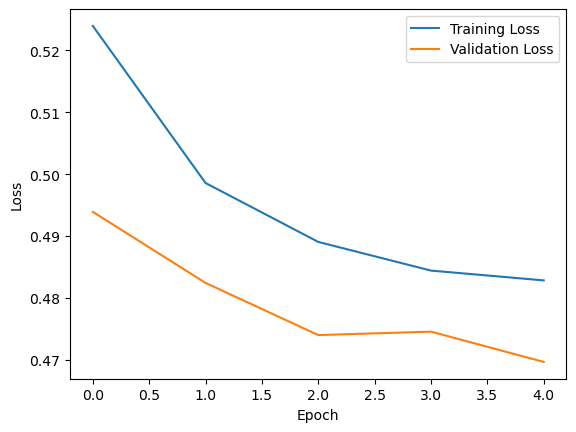
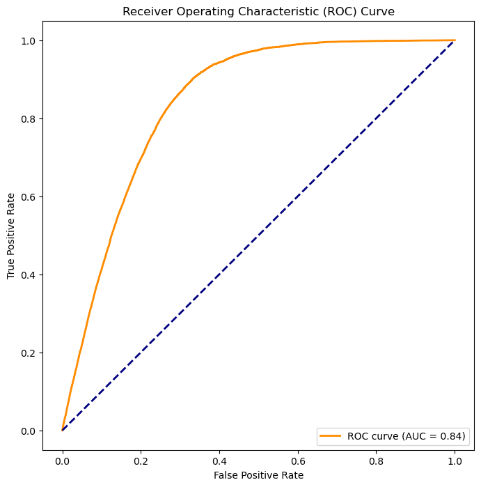
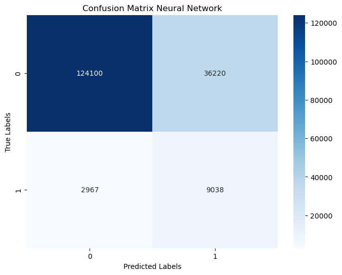
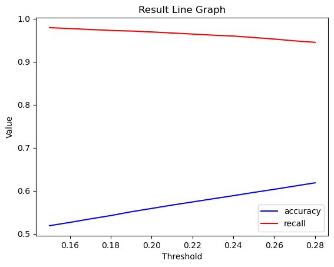
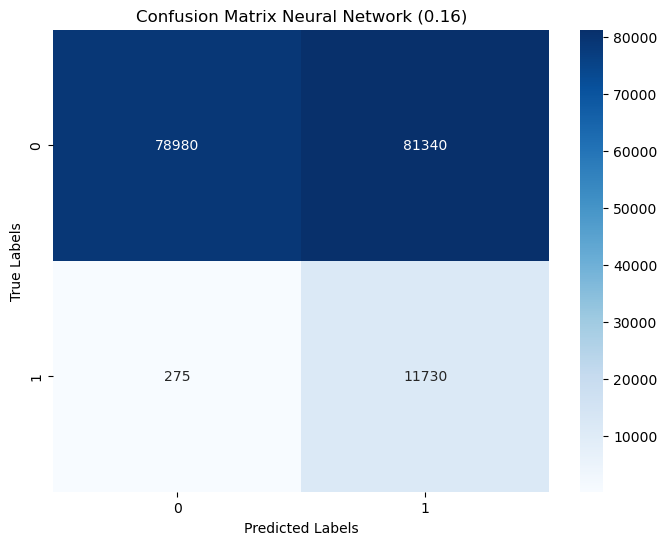
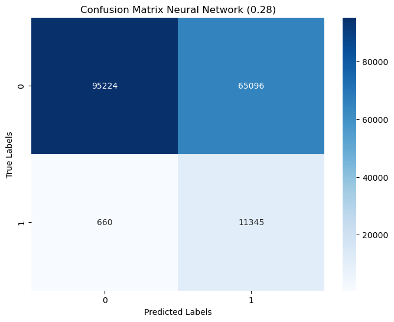

# from google.colab import drive
# drive.mount('/content/drive')딥러닝 코드 정리
# cd /content/drive/MyDrive/Colab Notebooks/법령프로젝트import os
os.environ['CUDA_LAUNCH_BLOCKING'] = '1'import pandas as pd
import numpy as np
import torch
import torch.nn as nn
from torch.utils.data import Dataset, DataLoader
from transformers import AutoModelForSequenceClassification, AutoTokenizer, AdamW, get_linear_schedule_with_warmup
from sklearn.model_selection import train_test_split
import matplotlib.pyplot as plt
from tqdm import tqdm1. 데이터 불러오기
df = pd.read_csv('BaseTable3.csv')
df.info()/var/folders/zr/_f1rgf8n0w3541q9k8p3smhr0000gn/T/ipykernel_99576/3148388814.py:1: DtypeWarning: Columns (5,6,14,17,18,19,20,25) have mixed types. Specify dtype option on import or set low_memory=False.
df = pd.read_csv('BaseTable3.csv')<class 'pandas.core.frame.DataFrame'>
RangeIndex: 861621 entries, 0 to 861620
Data columns (total 27 columns):
# Column Non-Null Count Dtype
--- ------ -------------- -----
0 Unnamed: 0 861621 non-null int64
1 소관부처명 861621 non-null object
2 법령명 861621 non-null object
3 법령구분 861621 non-null int64
4 조번호 861040 non-null object
5 항번호 666508 non-null object
6 호번호 504872 non-null object
7 조문제목 861621 non-null object
8 조문 861621 non-null object
9 사무판단 861621 non-null int64
10 사무판단근거 700807 non-null object
11 사무명 60065 non-null object
12 수행주체 60066 non-null object
13 사무유형 60023 non-null object
14 위임사무판단 761041 non-null object
15 위임근거규정 5290 non-null object
16 수임기관 4396 non-null object
17 특행기관 93064 non-null object
18 재위임사무판단 702423 non-null object
19 재위임근거규정 53 non-null object
20 재수임기관 13 non-null object
21 위탁사무판단 758605 non-null float64
22 위탁근거규정 3969 non-null object
23 수탁기관 3942 non-null object
24 사무유형(소분류) 60023 non-null object
25 기타 3 non-null object
26 조문_명_동 861621 non-null object
dtypes: float64(1), int64(3), object(23)
memory usage: 177.5+ MBdevice = torch.device('cuda') if torch.cuda.is_available() else torch.device('cpu') # GPU 사용
devicedevice(type='cpu')1) [조문, 사무판단] 추출
sub_df = df.loc[df['사무판단']!=2, ["조문", "사무판단"]]
sub_df| 조문 | 사무판단 | |
|---|---|---|
| 0 | 제1장 총칙 | 0 |
| 1 | 제1조(목적) 이 법은 개인정보의 처리 및 보호에 관한 사항을 정함으로써 개인의 자... | 0 |
| 2 | 제2조(정의) 이 법에서 사용하는 용어의 뜻은 다음과 같다. <개정 2014.3.2... | 0 |
| 3 | 1. "개인정보"란 살아 있는 개인에 관한 정보로서 다음 각 목의 어느 하나에 해당... | 0 |
| 4 | 1의2. "가명처리"란 개인정보의 일부를 삭제하거나 일부 또는 전부를 대체하는 등의... | 0 |
| ... | ... | ... |
| 861616 | 1. 한국수자원공사 | 0 |
| 861617 | 2. 법 제56조에 따른 한국상하수도협회 | 0 |
| 861618 | 제32조(규제의 재검토) 환경부장관은 다음 각 호의 사항에 대하여 다음 각 호의 기... | 0 |
| 861619 | 1. 제23조의2제1항ㆍ제4항 및 별표 7의2에 따른 저수조청소업의 인력ㆍ시설 및 ... | 0 |
| 861620 | 2. 제31조 및 별표 8에 따른 기술진단 대행 기관의 장비와 기술인력: 2014년... | 0 |
861621 rows × 2 columns
#sub_df.to_csv('sub_df.csv') # 임시 저장2. 데이터 분리
- label이 모집단과 동일한 비율로 분리되도록 설정
from sklearn.model_selection import StratifiedShuffleSplit
# StratifiedShuffleSplit을 사용하여 데이터를 분리
stratified_splitter = StratifiedShuffleSplit(n_splits=1, test_size=0.2, random_state=42)
for train_index, val_index in stratified_splitter.split(sub_df['조문'], sub_df['사무판단']):
train_df = sub_df.iloc[train_index]
val_df = sub_df.iloc[val_index]t_count = train_df['사무판단'].value_counts()
v_count = val_df['사무판단'].value_counts()
print(f"train 데이터 사무비율: {t_count[0]/sum(t_count)}")
print(f"val 데이터 사무비율: {v_count[0]/sum(v_count)}")train 데이터 사무비율: 0.9303376198324087
val 데이터 사무비율: 0.93033512258813293. 모델 구현
- 2 layer 인공신경망: 512 -> 128 -> 2
- 배치정규화, relu적용
1) 모델 정의
import torch.nn as nn
class MyModel(nn.Module):
def __init__(self, input_size, hidden_size, num_classes):
super(MyModel, self).__init__()
self.layer1 = nn.Linear(input_size, hidden_size)
self.batch_norm = nn.BatchNorm1d(hidden_size)
self.relu = nn.ReLU()
self.layer2 = nn.Linear(hidden_size, num_classes)
def forward(self, input_ids, attention_mask):
# 모델의 forward 계산 로직
x = self.layer1(input_ids.float())
x = self.batch_norm(x)
x = self.relu(x)
x = self.layer2(x)
return x# 모델 및 토크나이저 불러오기
model_name = 'klue/roberta-large'
#model = AutoModelForSequenceClassification.from_pretrained(model_name) # gpu부족으로 제한
tokenizer = AutoTokenizer.from_pretrained(model_name)
input_size = 512
hidden_size = 128
output_size = 2
model = MyModel(input_size, hidden_size, output_size)2) 입력 데이터셋 정리
- 512 차원으로 padding 진행
- batch size = 16
# 데이터셋 정의
class CustomDataset(Dataset):
def __init__(self, dataframe, tokenizer):
self.data = dataframe
self.tokenizer = tokenizer
def __len__(self):
return len(self.data)
def __getitem__(self, idx):
text = self.data.iloc[idx]['조문']
label = torch.tensor(self.data.iloc[idx]['사무판단'], dtype=torch.long)
tokenized_data = tokenizer(text, padding='max_length', max_length=512, truncation=True, return_tensors='pt')
return {'input_ids': tokenized_data['input_ids'].squeeze(),
'attention_mask': tokenized_data['attention_mask'].squeeze(),
'labels': label}# 각 배치의 텍스트 길이를 맞추기
def collate_fn(batch):
input_ids = [item['input_ids'] for item in batch]
attention_mask = [item['attention_mask'] for item in batch]
labels = [item['labels'] for item in batch]
# 패딩
input_ids = torch.nn.utils.rnn.pad_sequence(input_ids, batch_first=True, padding_value=tokenizer.pad_token_id)
attention_mask = torch.nn.utils.rnn.pad_sequence(attention_mask, batch_first=True, padding_value=0)
return {'input_ids': input_ids, 'attention_mask': attention_mask, 'labels': torch.stack(labels)}# 데이터로더 생성
batch_size = 16 # 배치크기 조절
train_dataset = CustomDataset(train_df, tokenizer)
train_loader = DataLoader(train_dataset, batch_size=batch_size, shuffle=True, collate_fn=collate_fn)
val_dataset = CustomDataset(val_df, tokenizer)
val_loader = DataLoader(val_dataset, batch_size=batch_size, shuffle=False, collate_fn=collate_fn)val_dataset<__main__.CustomDataset at 0x2ca5ee6b0># 모델을 GPU로 이동 -> 작은 신경망이라 cpu로 돌림
#model.to(device)3) 튜닝 파라미터 지정
- optimizer: Adam
- learning rate: 1e-5
# 나머지 파라미터 정리
optimizer = AdamW(model.parameters(), lr=1e-5)
num_epochs = 5
total_steps = len(train_loader) * num_epochs
scheduler = get_linear_schedule_with_warmup(optimizer, num_warmup_steps=0, num_training_steps=total_steps)/Users/ihongju/anaconda3/lib/python3.10/site-packages/transformers/optimization.py:306: FutureWarning: This implementation of AdamW is deprecated and will be removed in a future version. Use the PyTorch implementation torch.optim.AdamW instead, or set `no_deprecation_warning=True` to disable this warning
warnings.warn(4) 모델 학습
# 손실 기록을 위한 리스트
train_losses = []
val_losses = []from sklearn.metrics import recall_score
# 클래스 0에 대한 적절한 가중치를 계산 (imbalance data 고려)
class_0_weight = 0.06
class_1_weight = 1.0
class_weights = [class_0_weight, class_1_weight] # 0, 1의 가중치를 차등 부여
# 학습 루프에서 'labels'를 사용하는 부분 수정
for epoch in range(num_epochs):
model.train()
total_loss = 0.0
for batch in tqdm(train_loader, desc=f'Epoch {epoch + 1}/{num_epochs} - Training'):
inputs = {key: value.to(device) for key, value in batch.items() if key != 'labels'}
labels = batch['labels'].to(device)
# 모델에 토큰화된 입력 데이터 전달
logits = model(**inputs)
if logits.dtype != torch.float32:
logits = logits.float()
loss = torch.nn.functional.cross_entropy(logits, labels, weight=torch.Tensor(class_weights).to(device))
loss.backward()
optimizer.step()
scheduler.step()
optimizer.zero_grad()
total_loss += loss.item()
avg_train_loss = total_loss / len(train_loader)
train_losses.append(avg_train_loss)
print(f'Epoch {epoch + 1}/{num_epochs}, Average Training Loss: {avg_train_loss}')
model.eval()
val_loss = 0.0
y_true = [] # 실제 레이블을 저장할 리스트
y_pred = [] # 모델의 예측 결과를 저장할 리스트
with torch.no_grad():
for batch in tqdm(val_loader, desc=f'Epoch {epoch + 1}/{num_epochs} - Validation'):
inputs = {key: value.to(device) for key, value in batch.items() if key != 'labels'}
labels = batch['labels'].to(device)
# 모델에 토큰화된 입력 데이터 전달
outputs = model(**inputs)
if outputs.dtype != torch.float32:
outputs = outputs.float()
_, predictions = torch.max(outputs, 1)
y_true.extend(labels.cpu().numpy())
y_pred.extend(predictions.cpu().numpy())
val_loss += torch.nn.functional.cross_entropy(outputs, labels, weight=torch.Tensor(class_weights).to(device))
avg_val_loss = val_loss / len(val_loader)
val_losses.append(avg_val_loss)
print(f'Epoch {epoch + 1}/{num_epochs}, Validation Loss: {avg_val_loss}')
# Calculate Recall
recall = recall_score(y_true, y_pred, average='weighted') # 'weighted'는 각 클래스의 샘플 수에 따라 가중 평균을 계산합니다.
print(f'Epoch {epoch + 1}/{num_epochs}, Validation Recall: {recall}')Epoch 1/5 - Training: 100%|██████████████| 43081/43081 [03:14<00:00, 221.63it/s]
Epoch 1/5 - Validation: 100%|████████████| 10771/10771 [00:40<00:00, 264.66it/s]
Epoch 2/5 - Training: 100%|██████████████| 43081/43081 [03:13<00:00, 222.08it/s]
Epoch 2/5 - Validation: 100%|████████████| 10771/10771 [00:40<00:00, 268.15it/s]
Epoch 3/5 - Training: 100%|██████████████| 43081/43081 [03:11<00:00, 224.61it/s]
Epoch 3/5 - Validation: 100%|████████████| 10771/10771 [00:40<00:00, 264.87it/s]
Epoch 4/5 - Training: 100%|██████████████| 43081/43081 [03:12<00:00, 223.36it/s]
Epoch 4/5 - Validation: 100%|████████████| 10771/10771 [00:41<00:00, 257.78it/s]
Epoch 5/5 - Training: 100%|██████████████| 43081/43081 [03:12<00:00, 223.52it/s]
Epoch 5/5 - Validation: 100%|████████████| 10771/10771 [00:40<00:00, 266.81it/s]Epoch 1/5, Average Training Loss: 0.5239665991301568
Epoch 1/5, Validation Loss: 0.4939045310020447
Epoch 1/5, Validation Recall: 0.7724125924851298
Epoch 2/5, Average Training Loss: 0.4985668318130958
Epoch 2/5, Validation Loss: 0.48241615295410156
Epoch 2/5, Validation Recall: 0.7729754823734223
Epoch 3/5, Average Training Loss: 0.4890418174231894
Epoch 3/5, Validation Loss: 0.4739820957183838
Epoch 3/5, Validation Recall: 0.7625475119686639
Epoch 4/5, Average Training Loss: 0.4844063688010349
Epoch 4/5, Validation Loss: 0.47453540563583374
Epoch 4/5, Validation Recall: 0.7842100681851153
Epoch 5/5, Average Training Loss: 0.48282361713480765
Epoch 5/5, Validation Loss: 0.46963998675346375
Epoch 5/5, Validation Recall: 0.77259828811838091) loss 그래프
# 손실 값 시각화
plt.plot(train_losses, label='Training Loss')
plt.plot(val_losses, label='Validation Loss')
plt.xlabel('Epoch')
plt.ylabel('Loss')
plt.legend()
plt.show()
5 모델 평가
from sklearn.metrics import precision_score, recall_score, f1_score
model.eval()
val_loss = 0.0
all_labels = []
all_preds = []
all_probs = []
with torch.no_grad():
for batch in tqdm(val_loader, desc=f'Validation'):
inputs = {key: value.to(device) for key, value in batch.items() if key != 'labels'}
labels = batch['labels'].to(device)
# 모델에 토큰화된 입력 데이터 전달
outputs = model(**inputs)
if outputs.dtype != torch.float32:
outputs = outputs.float()
val_loss += torch.nn.functional.cross_entropy(outputs, labels.long())
# 소프트맥스를 적용하여 확률값 얻기
probs = torch.nn.functional.softmax(outputs, dim=1)
all_probs.extend(probs.cpu().numpy())
# 예측값과 정답을 리스트에 추가
_, preds = torch.max(outputs, 1)
all_labels.extend(labels.cpu().numpy())
all_preds.extend(preds.cpu().numpy())
# 손실 계산
avg_val_loss = val_loss / len(val_loader)
val_losses.append(avg_val_loss)Validation: 100%|████████████████████████| 10771/10771 [00:40<00:00, 265.79it/s]1) 결과 확인
prob = [sublist[1] for sublist in all_probs]# 결과 데이터프레임 생성
result_df = pd.DataFrame({
'True_Labels': all_labels,
'Predictions': all_preds,
'Probability_1': prob
})
result_df| True_Labels | Predictions | Probability_1 | |
|---|---|---|---|
| 0 | 0 | 0 | 0.026727 |
| 1 | 0 | 0 | 0.097768 |
| 2 | 0 | 0 | 0.036723 |
| 3 | 0 | 0 | 0.353132 |
| 4 | 0 | 1 | 0.520629 |
| ... | ... | ... | ... |
| 172320 | 0 | 0 | 0.008365 |
| 172321 | 0 | 1 | 0.508366 |
| 172322 | 0 | 0 | 0.012416 |
| 172323 | 1 | 1 | 0.578635 |
| 172324 | 0 | 1 | 0.726729 |
172325 rows × 3 columns
#result_df.to_csv('epo5_result_df.csv') # 결과 저장#torch.save(model.state_dict(), "model_06_1_5.pth") # 모델 저장2) 결과 통계량 확인
result_df.loc[result_df['Predictions']==0, ].describe()| True_Labels | Predictions | Probability_1 | |
|---|---|---|---|
| count | 127067.000000 | 127067.0 | 127067.000000 |
| mean | 0.023350 | 0.0 | 0.152123 |
| std | 0.151013 | 0.0 | 0.154932 |
| min | 0.000000 | 0.0 | 0.002187 |
| 25% | 0.000000 | 0.0 | 0.023082 |
| 50% | 0.000000 | 0.0 | 0.070822 |
| 75% | 0.000000 | 0.0 | 0.275795 |
| max | 1.000000 | 0.0 | 0.499992 |
result_df.loc[result_df['Predictions']==1, ].describe()| True_Labels | Predictions | Probability_1 | |
|---|---|---|---|
| count | 45258.000000 | 45258.0 | 45258.000000 |
| mean | 0.199700 | 1.0 | 0.653751 |
| std | 0.399779 | 0.0 | 0.096457 |
| min | 0.000000 | 1.0 | 0.500006 |
| 25% | 0.000000 | 1.0 | 0.573960 |
| 50% | 0.000000 | 1.0 | 0.645236 |
| 75% | 0.000000 | 1.0 | 0.723073 |
| max | 1.000000 | 1.0 | 0.965777 |
3) ROC 커브 확인
from sklearn.metrics import roc_curve, auc
fpr, tpr, thresholds = roc_curve(result_df['True_Labels'], result_df['Probability_1'])
roc_auc = auc(fpr, tpr)
# ROC 커브 그리기
plt.figure(figsize=(8, 8))
plt.plot(fpr, tpr, color='darkorange', lw=2, label=f'ROC curve (AUC = {roc_auc:.2f})')
plt.plot([0, 1], [0, 1], color='navy', lw=2, linestyle='--')
plt.xlabel('False Positive Rate')
plt.ylabel('True Positive Rate')
plt.title('Receiver Operating Characteristic (ROC) Curve')
plt.legend(loc='lower right')
plt.show()
- 디폴트 threshold 기준 평가 지표 확인
from sklearn.metrics import accuracy_score, confusion_matrix, precision_score, recall_score, f1_score
# confusion matrix, accuracy, precision, recall, f1-score 계산
conf_matrix = confusion_matrix(all_labels, all_preds)
accuracy = accuracy_score(all_labels, all_preds)
precision = precision_score(all_labels, all_preds)
recall = recall_score(all_labels, all_preds)
f1 = f1_score(all_labels, all_preds)
# 디폴트 결과 출력
print(f"Avg Validation Loss: {avg_val_loss}")
print(f"Accuracy: {accuracy}")
print(f"Precision: {precision}")
print(f"Recall: {recall}")
print(f"F1-Score: {f1}")
print("Confusion Matrix:")
print(conf_matrix)Avg Validation Loss: 0.39846527576446533
Accuracy: 0.7725982881183809
Precision: 0.1996995006407707
Recall: 0.7528529779258643
F1-Score: 0.31566631157990327
Confusion Matrix:
[[124100 36220]
[ 2967 9038]]import seaborn as sns
# seaborn을 사용하여 heatmap으로 confusion matrix 시각화
plt.figure(figsize=(8, 6))
sns.heatmap(conf_matrix, annot=True, fmt='d', cmap='Blues', xticklabels=[0, 1], yticklabels=[0, 1])
plt.title('Confusion Matrix Neural Network')
plt.xlabel('Predicted Labels')
plt.ylabel('True Labels')
plt.show()
4) threshold 조절
from sklearn.metrics import accuracy_score, confusion_matrix, precision_score, recall_score, f1_score
def cal_result(preds, y):
conf_matrix = confusion_matrix(y, preds)
accuracy = accuracy_score(y, preds)
precision = precision_score(y, preds)
recall = recall_score(y, preds)
f1 = f1_score(y, preds)
return accuracy, recallx = np.arange(0.15, 0.29, 0.01).tolist()
y_acc = []
y_rec = []
for i in x:
threshold = i
result_df['new_predictions'] = 0
result_df.loc[result_df['Probability_1']>threshold, 'new_predictions'] = 1
acc, rec = cal_result(result_df['new_predictions'], result_df['True_Labels'])
y_acc.append(acc)
y_rec.append(rec)- threshold에 따른 accuracy, recall 그래프 확인
import matplotlib.pyplot as plt
# accuracy 그래프
plt.plot(x, y_acc, label='accuracy', color='blue')
# recall 그래프
plt.plot(x, y_rec, label='recall', color='red')
# 그래프에 제목과 축 레이블 추가
plt.title('Result Line Graph')
plt.xlabel('Threshold')
plt.ylabel('Value')
# 범례 추가
plt.legend()
# 그래프 표시
plt.show()
print(f"accuracy 최대값: {y_acc[-1]}, 최소값: {y_acc[0]}")
print(f"recall 최소값: {y_rec[-1]}, 최대값: {y_rec[0]}")accuracy 최대값: 0.6184186856230959, 최소값: 0.5187291455099377
recall 최소값: 0.9450229071220325, 최대값: 0.9790920449812578- prediction 중위수, 3분위수에 따른 결과 모두 출력
def cal_result2(preds, y):
conf_matrix = confusion_matrix(y, preds)
accuracy = accuracy_score(y, preds)
precision = precision_score(y, preds)
recall = recall_score(y, preds)
f1 = f1_score(y, preds)
# 결과 출력
print(f"Avg Validation Loss: {avg_val_loss}")
print(f"Accuracy: {accuracy}")
print(f"Precision: {precision}")
print(f"Recall: {recall}")
print(f"F1-Score: {f1}")
print("Confusion Matrix:")
print(conf_matrix)
return conf_matrix
# prediction 중위수
print('======threshold = 0.16======')
threshold = 0.16
result_df['new_predictions'] = 0
result_df.loc[result_df['Probability_1']>threshold, 'new_predictions'] = 1
a = cal_result2(result_df['new_predictions'], result_df['True_Labels'])
# prediction 3분위수
print('======threshold = 0.28======')
threshold = 0.28
result_df['new_predictions'] = 0
result_df.loc[result_df['Probability_1']>threshold, 'new_predictions'] = 1
b = cal_result2(result_df['new_predictions'], result_df['True_Labels'])======threshold = 0.16======
Avg Validation Loss: 0.39846527576446533
Accuracy: 0.5263890903815465
Precision: 0.1260341678306651
Recall: 0.9770928779675135
F1-Score: 0.22326909350463958
Confusion Matrix:
[[78980 81340]
[ 275 11730]]
======threshold = 0.28======
Avg Validation Loss: 0.39846527576446533
Accuracy: 0.6184186856230959
Precision: 0.14841511754163342
Recall: 0.9450229071220325
F1-Score: 0.25654071410804336
Confusion Matrix:
[[95224 65096]
[ 660 11345]]# seaborn을 사용하여 heatmap으로 confusion matrix 시각화
plt.figure(figsize=(8, 6))
sns.heatmap(a, annot=True, fmt='d', cmap='Blues', xticklabels=[0, 1], yticklabels=[0, 1])
plt.title('Confusion Matrix Neural Network (0.16)')
plt.xlabel('Predicted Labels')
plt.ylabel('True Labels')
plt.show()
plt.figure(figsize=(8, 6))
sns.heatmap(b, annot=True, fmt='d', cmap='Blues', xticklabels=[0, 1], yticklabels=[0, 1])
plt.title('Confusion Matrix Neural Network (0.28)')
plt.xlabel('Predicted Labels')
plt.ylabel('True Labels')
plt.show()
